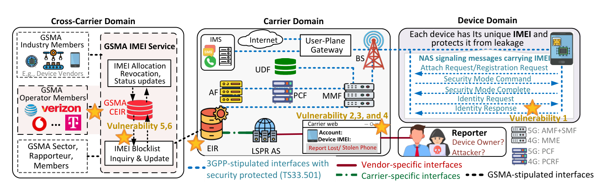
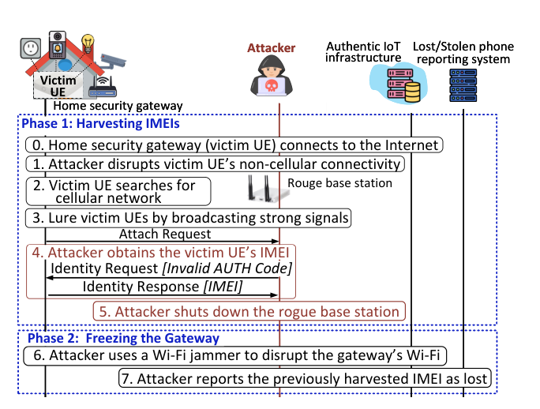
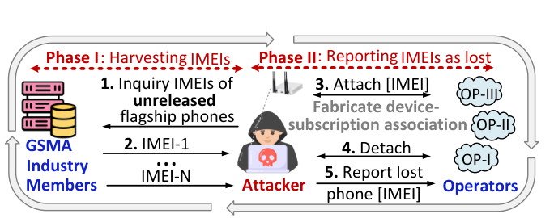
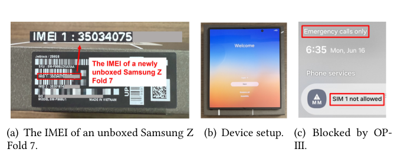

Guan-Hua (Scott) Tu
Associate Professor
Department of Computer Science and Engineering,
Michigan State University
428 S SHAW LN, ROOM 3115
East Lansing, MI 48824-1266
Email: ghtu AT msu.edu
Office: 1124 Engineering Building
Lost/Stolen Phone Reporting Service Security
- Insecurity of Lost/Stolen Phone Reporting Services: Vulnerabilities, Attacks, and Countermeasures [MobiSys'26, Best Paper Award; ACM GetMobile Research Highlights 2026] (Paper)
- End-to-end lost/stolen device reporting ecosystem across device, carrier, and cross-carrier domains, with vulnerabilities (V1–V6) shown at their exposure points
- Home Security System Freezing (secFreezing) attack: an attacker harvests the IMEI of a home security gateway with a rogue base station, then jams the gateway's Wi-Fi and reports the harvested IMEI as lost
- Zero-Day Flagship Phone Ambush (flagAmbush) attack: an attacker obtains the IMEIs of unreleased flagship phones and reports them as lost before they are sold
- A brand-new Samsung Galaxy Z Fold 7 is blocked after unboxing due to the flagAmbush attack
- MobiSys'26 Best Paper Award
- Media report
- eSecurity Planet: Researchers Found a Way to Blacklist Phones That Were Never Stolen (Sep. 2026)
- Help Net Security: Getting a stranger's phone kicked off the cellular network costs a few dollars (Sep. 2026)
- Tech Xplore: A stolen-phone safeguard could disrupt home alarms and block new flagship phones (Sep. 2026)
- EurekAlert!: Uncovering security flaws that could remotely block mobile devices from cellular networks (Sep. 2026)
- MSU Today: Security flaws could block devices from cellular networks (Sep. 2026)
Over 800 carriers worldwide offer lost/stolen phone reporting services to prevent device misuse. Prior work asked how thieves could evade blocking; we asked the opposite question and showed that these services can be weaponized to remotely disconnect uncompromised devices. Our first end-to-end analysis uncovered six vulnerabilities across devices and carriers, enabling attackers to blacklist arbitrary cellular devices by IMEI without victim proximity or sustained attack traffic. Notably, we identified a systemic flaw in the 3GPP conformance-testing pipeline that permits certification of vulnerable cellular IoT chipsets despite IMEI leaks through improperly authenticated signaling. By exploiting this flaw, adversaries can harvest the IMEIs of cellular modems in home-security gateways and blacklist them, blocking critical alarms over cellular connectivity. The threat extends to medical monitors, utility meters, and industrial sensors using chipsets from two vendors holding over 40% of the global cellular IoT modem market. We also demonstrated that brand-new flagship phones can be blacklisted before unboxing using pre-release IMEIs exposed through GSMA industry members. GSMA engaged its Device Security Group to determine appropriate actions in response to our research.



